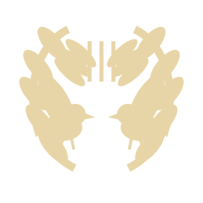

内容更新
戦国VSとは：一城から領国を育てるブラウザゲーム
「戦国VS」は、KASAI SOLUTIONSが制作する、基本プレイ無料の戦国戦略シミュレーションです。田畑や商家を育て、武将を迎え、軍団を編成。城下町の内政と城をめぐる合戦を重ねながら、はじまりの一城から天下統一を目指します。
個人の戦役では天下地図のCPU勢力を攻略します。領主を登録すると、共通フィールドでの対人戦、同盟、書状、交易を楽しめます。軍師AIは現在の戦況から準備や戦法を提案し、天下地図のCPU城では方針に沿った自動進軍も支えます。
PC・スマートフォン・タブレットのブラウザに対応し、アプリのインストールは不要です。同じ領主へ連携すれば、育てた城や武将の続きを端末間で引き継げます。
一城から、天下へ。
| 項目 | 内容 |
|---|---|
| 作品名 | 戦国VS（SENGOKU VS） |
| ジャンル | 戦国戦略シミュレーション・ブラウザゲーム |
| 遊び方 | 個人のCPU戦役／領主同士の合戦・同盟・交易 |
| 対応端末 | PC・スマートフォン・タブレット。ゲームにはJavaScript、オンライン機能には通信が必要です。 |
| 利用料金 | 基本プレイ無料。別売りの外観アイテム・月額支援は、プレミアムの料金と内容で確認できます。 |
| 制作・著作権 | KASAI SOLUTIONS |
有料商品は旗印・城下町の外観・勲章・サポーターバッジです。武将の能力、兵力、生産量や指令回復を優遇する特典はありません。
初めての方向けの紹介・よくある質問 戦国VSの遊び方を読む 24秒の作品紹介と実際のゲーム画面を見る選んだ城を育て、仲間と戦記を重ねる
一城から始める内政と武将編成
最初は、大都市拠点を除く城から本拠を一つ選びます。田畑や商業施設で資源を生産し、増築や研究、募兵へ配分します。同じ施設の次のレベルを予約すると、費用と指令を支払った順に工事が進みます。城下町では施設名と現在レベルを確認でき、天守から町並みまでの全景を見ながら操作できます。
武将は登用・招集で迎え、軍団と内政を支える奉行に配置します。人物の能力・特技・ランクを見て、戦い方や城下町の育て方を考えます。始め方と操作は、開始城と序盤の進め方、本拠・城郭のレベルの上げ方、施設の連続増築、武将と軍団の編成で案内しています。
全プレイヤー共通の年月と占領報酬
世界時計は1560年1月から1615年12月までを繰り返します。区切りには占領拠点をリセットし、直前に保有した本拠以外の城数に応じて報酬を受け取ります。選んだ本拠の成長、武将・施設・研究・所持資源は引き継ぎます。留守中の生産や普請は、再接続時に共通時刻まで反映します。詳しくは共通時間と拠点リセットのルールをご覧ください。
同盟の資産共有と領主への書状
領主を登録すると、世界チャット、オンラインの接続一覧、同盟などを利用できます。同盟では役職を設け、共有金庫に納めた資産をメンバーで使えます。共通フィールドの本拠からは、相手本人か所属同盟を宛先に選び、書状を送って返信できます。同盟宛ての書状は送った領主と、その同盟の現在のメンバーに共有されます。
同盟の役職・共有金庫・ランキングと、書状の宛先・閲覧範囲を確認できます。
他国との資産の輸出・輸入
「交流」から交易を開き、ほかの領主へ兵士・金銭・兵糧・木材・石材・勾玉の交換を申し込めます。提供する数量と受け取りたい対価を示し、相手が承認すると成立します。無償の輸出にも対応し、申出・取引履歴・対価や返還分の受け取りを端末間で共有します。詳しい流れは交易の案内をご覧ください。
大都市拠点からの偵察・駐留・反撃
所持する大都市拠点から部隊を雇用し、遠方の城や接続中の領主の拠点へ派遣できます。偵察結果を自分だけの報告で確認し、部隊を駐留させて、派遣元への攻撃を受けたあとの反撃に備えます。派遣部隊の案内で雇用から撤収までの流れを確認できます。
野良兵士とのCPU戦
全国129拠点の周辺へ配置された野良兵を、拡大マップから選んで対戦できます。軍団と出陣兵数、4つの戦術を組み合わせ、指令1と兵糧を使って出陣します。勝敗による兵の損失と、勝利時の資源・勾玉・威信を戦果に記録します。野良兵戦の案内で準備と費用を確認できます。
京都御所への参内
従五位以上の領主は京都御所へ出向き、談話や非公開の謁見で交流できます。参内の条件と操作を確認できます。
共通フィールドの報酬戦と大都市の占領戦
江戸城・京都御所は、占領せず勝利報酬を得る対人戦です。江戸城の城郭はLv.64、京都御所の城郭はLv.128まで育ちます。二条城・大坂城・名古屋城は城郭Lv.48までの占領対象で、勝利すると選んだ領主の城を自分の所領に加えます。未陥落の支拠点がある大都市は、支拠点をすべて攻略してから本拠へ出陣します。江戸は4か所・Lv.8まで、二条・大坂・名古屋は各2か所・Lv.24まで建設でき、京都御所には支拠点はありません。通常の本拠はLv.32までで、領有を移さない限定襲撃です。各城の報酬・占領・保護期間を確認して出陣できます。
勝敗と本拠移転を伝えるシステムメール
対人戦の確定後、攻撃側と守備側の双方にゲーム内の郵便が届きます。勝敗・被攻撃・実際の戦利品や報酬、占領の結果を残し、本拠が移った場合は移転先も伝えます。次に接続したときにも未読の知らせを確認できます。閲覧の手順はシステムメールの案内にまとめています。
軍師AIとウォーキングの遊び方
すべての戦いで、準備を支える軍師AI
軍師は現在の兵力・士気・戦況を比較し、戦法や出陣条件を提案します。変更できる戦いでは、提案を入力に反映してから内容を確認して出陣できます。部隊や戦法が固定の戦いでは、現在の強さと次に整えたい準備を案内します。
作戦文から次の出陣を評価する軍師AI
「兵を温存して弱い城から攻める」などの作戦文を入力すると、ゲーム内の軍師AIが城・戦法・出陣兵数を比較し、候補と予測勝率を示します。内容を確認して自動進軍を開始し、いつでも停止できます。対象は天下地図の隣接するCPU勢力の城で、保護城や同盟中の城を除きます。
自動進軍は画面を表示し、共通時間が進んでいる操作端末で動きます。敗戦、目標達成、出陣回数の上限などで停止し、画面を閉じている間の攻撃をまとめて実行することはありません。作戦文を外部の生成AIサービスへ送信しません。軍師AIの使い方と停止条件を確認してから始められます。
検知した歩数に応じて五つの資産を獲得
モーションセンサーに対応したスマートフォン・タブレットでウォーキングを開始すると、検知した1歩につき金銭・兵糧・木材・石材・勾玉をそれぞれ2獲得します。位置情報は使わず、ゲーム画面を表示している間の端末の動きから歩数を推定します。
画面ロック中や別アプリの表示中は計測できず、端末の持ち方や振動によって専用の歩数計と差が出る場合があります。世界時計の倍速で歩行報酬が増えることはありません。ウォーキングの開始手順と対応条件に詳しくまとめています。
イベントの戦い一覧・毎戦報酬・幕府開設
期間限定合戦は、史実をもとにした55の合戦、ゲーム内の全129城、6種類の野良兵戦を合わせた190件の戦い一覧から設計されます。開催中のイベントでは3つの戦場へ挑み、軍師が現在の軍団に合う戦術を提案します。
新しい一覧から作られたイベントでは、勝利時に金銭・兵糧・木材・石材・勾玉、敗北時にも一部の奮戦報酬を獲得できます。戦功の目標を達成すると、追加の報酬が郵便へ届きます。
関ヶ原の戦いなど天下統一の結末を持つイベントで、全3戦場の勝利と必要戦功を達成すると、幕府を開く権利が得られます。天下地図や共有天下統一の達成も対象です。「幕府の記録」から開設すると、幕府名と「征夷大将軍」の称号が記録されます。
合戦名は題材であり、敵軍や報酬、天下統一の条件はゲーム独自のルールです。開催条件と達成状況は合戦画面で確認できます。
期間限定合戦の参加と報酬 幕府を開く条件と手順武将・城郭・施設の収録と成長段階
戦国期から近世初頭の人物と城を、年代を横断した「群雄集結」の設定で収録しています。歴史上の全武将を網羅した名簿ではなく、能力・特技・ランク・所属や勢力配置はゲーム向けの創作です。
| 対象 | 種類と段階 | 基本画像数 |
|---|---|---|
| 武将 | 256名 × 8ランク | 2,048 |
| 城郭 | 129拠点 × Lv.1〜32 | 4,128 |
| 施設 | 64種類 × Lv.1〜32 | 2,048 |
| BGM | 20曲（提供4曲・オリジナル16曲） | — |
武将はD・C・B・A・S・SS・SSS・Uの8ランクで衣装や背景が変わります。城郭と施設は、普請が進むにつれて建物や周囲の風景が変化します。
ゲーム内の施設と通常城の城郭はLv.32まで、二条城・大坂城・名古屋城の城郭はLv.48まで、江戸城の城郭はLv.64まで、京都御所の城郭はLv.128まで育成できます。城郭と施設の絵姿はそれぞれ32段階で、大都市のLv.33以降は最終形態のイラストを使います。
自動選曲では、トップメニューと本拠選択中に「支度」、ゲーム内では端末の時刻に合わせて「朝活」「昼活」「夜活」が流れます。箏・三味線・笛・笙・太鼓をイメージした従来の16曲も、音楽帳から自由に選べます。戦国の音楽帳では、全20曲の聴きどころと全編をゲームの外で試聴できます。自動再生と音量の設定は音楽の遊び方案内をご覧ください。
ゲームの世界を描く、独自の表現。
武将は和風アニメ調、城や施設は発展が伝わる建築イラストとして制作しています。衣装・兜・装飾・背景・建物の構成を描き分けた、本作用の表現です。人物の実際の容姿や、城郭の厳密な復元図を示すものではありません。
一城に、あなたらしい彩りを。
城下町の景色や領主の名札を、好きな外観に切り替えられます。金・紅蓮・白銀の旗印、月影・桜雲・雪華の城下町、鳳凰の勲章、黄金のサポーターバッジを用意しています。
外観コレクションと支援の案内で、実際に使われるイラストを見比べられます。
- イラストの構成と制作方針画像数の数え方と、ランク・成長段階の構成。
- 武将の収録方針・人物資料全国から選抜した256名と、人物・所属・能力の扱い。
日本の山河と、城跡の位置をたどる。
天下地図は、公開された地理データと、城郭・史跡・施設の代表地点から描いています。日本の海岸線、標高に応じた段彩と陰影、参考県境、主要な河川・湖を重ねています。
海岸線や標高は現代の地理資料です。戦国期の埋立て前の海岸線や旧国境を測量復元した地図ではありません。城の点は史跡・施設の代表地点で、天守や本丸の測量中心を意味しません。勢力配置と進軍経路はゲーム設定です。
- Natural EarthMade with Natural Earth. 海岸線・参考県境・河川・湖の地理データを加工して使用。Natural EarthのデータはPublic Domainです。
- 国土地理院・地理院タイル地理院タイル（国土地理院）を加工して作成。標高タイルと陰影起伏図をもとに、段彩と陰影を合成しています。
- 『日本歴史地名大系』施設・地点項目データセットCODH作成、doi:10.20676/00000456、CC BY 4.0。城の代表地点の確認に使用し、ゲーム内名称との対応付けと項目選択を行っています。
- 福井県 観光情報・オープンデータCC BY 2.1 JP。丸岡城・大野城の観光施設代表点を使用しています。
- 地図の全出典・利用条件・加工内容129拠点の個別出典、地図データの精度と限界、提供元へのクレジット。
その家を知る、もう一つのしるし。
武将と城に登場する勢力へ、家紋または識別章を割り当てています。「家紋帳」では家名を検索し、代表意匠と採用理由、資料の確認状況を読めます。


家紋は、資料の名称・構成を参考に独自に描いたゲーム用の略図です。時代・分家・人物・器物による異形を、一つの代表意匠として整理しています。「諸家」「在地衆」などの集合勢力には、ゲーム独自の群章を用いています。
資料確認済み、伝承・二次資料、参考・創作の区分を分け、同定に限界がある意匠はその旨を記載しています。同じ基本図形を複数の家が使う場合もあります。
家紋・群章の対応表と出典を読む© KASAI SOLUTIONS
本サイトの著作権表記はKASAI SOLUTIONSです。ゲームの表示・説明・オリジナル素材のクレジットを、この名称で統一しています。
地理データなどの第三者資料には、それぞれの提供元の利用条件が適用されます。地図上のクレジットと、地図・家紋・人物の各出典資料に、提供元・加工内容・参照先を記載しています。
データの引き継ぎについて
領主の認証情報とゲーム進行のバックアップ方法は、専用ページで案内しています。機種変更やサイトのURL変更をしたときは、同じ領主IDへ再接続して続きを確認してください。
機種変更・ドメイン移行・データ復元の案内